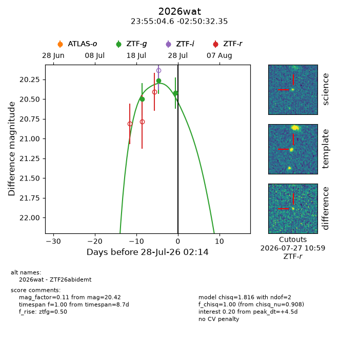
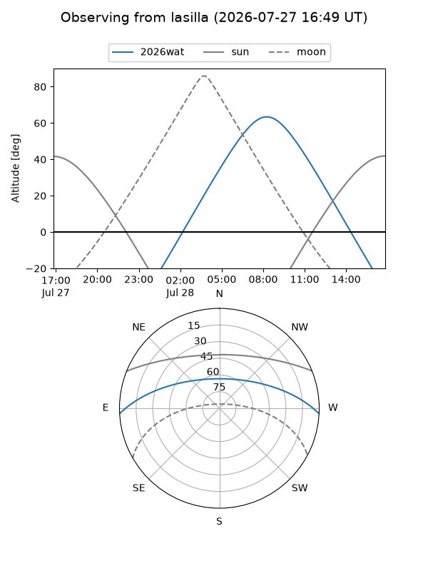
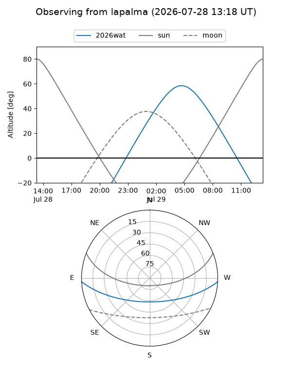
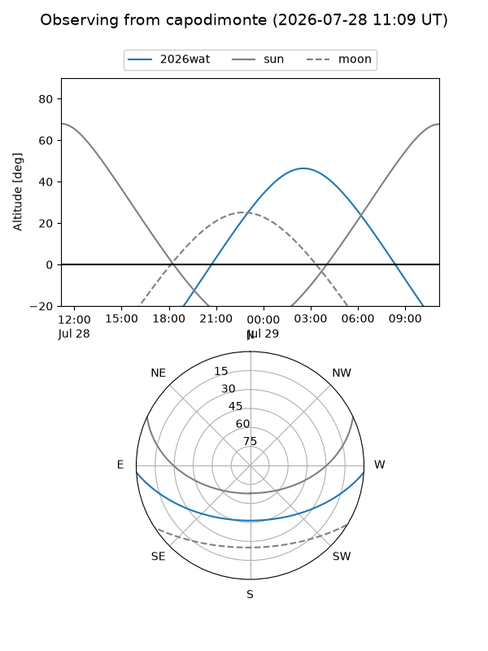
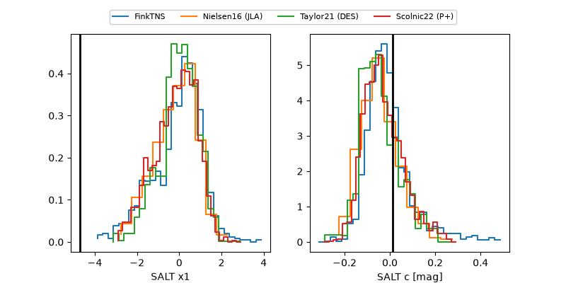

2026wat
Target 2026wat at 2026-07-28 14:17
Aliases and brokers:
FINK-ZTF: ztf.fink-portal.org/ZTF26abidemt
Lasair-ZTF: lasair-ztf.lsst.ac.uk/objects/ZTF26abidemt
ALeRCE-ZTF: alerce.online/object/ZTF26abidemt
YSE-PZ: ziggy.ucolick.org/yse/transient_detail/2026wat
TNS name: wis-tns.org/object/2026wat
Direct TNS query: direct search
alt names
ZTF26abidemt (ztf,fink_ztf)
2026wat (tns,yse)
Coordinates:
equatorial (ra, dec) = 358.7692,-2.84232
equatorial (HMS+DMS) = 23:55:04.60,-02:50:32.35
galactic (l, b) = (91.4834,-62.22203)
Flags:
TNS type: nan
peak dt: +5.0
Photometry:
last ztfg=20.42
3 ztfg detections
Lightcurve

Visibility



Additional plots
